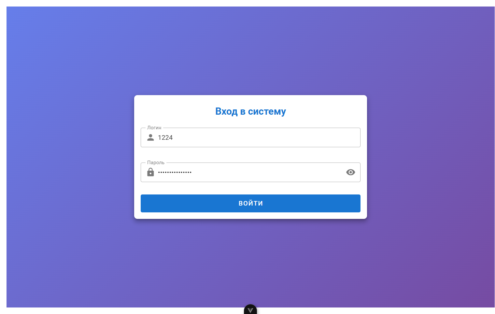
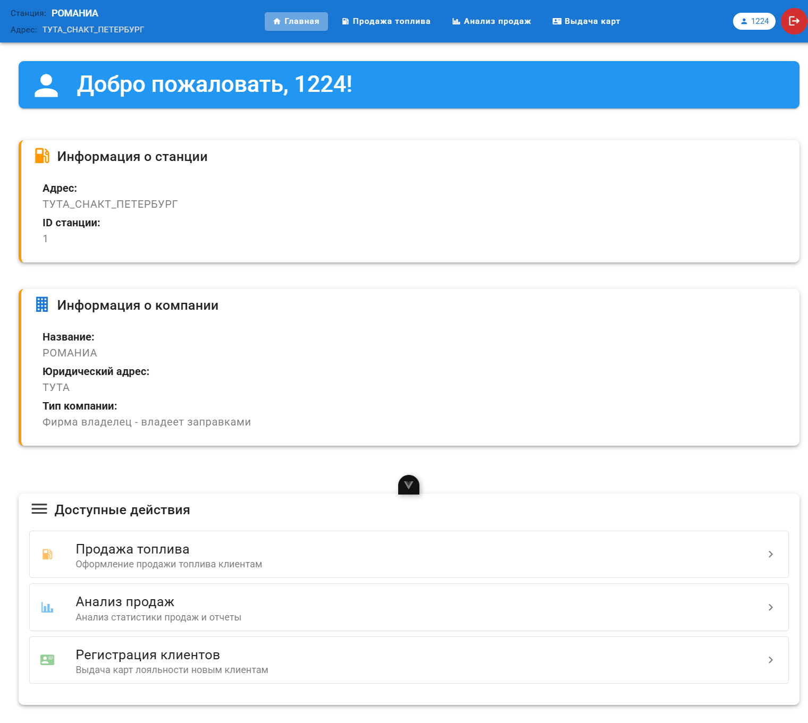
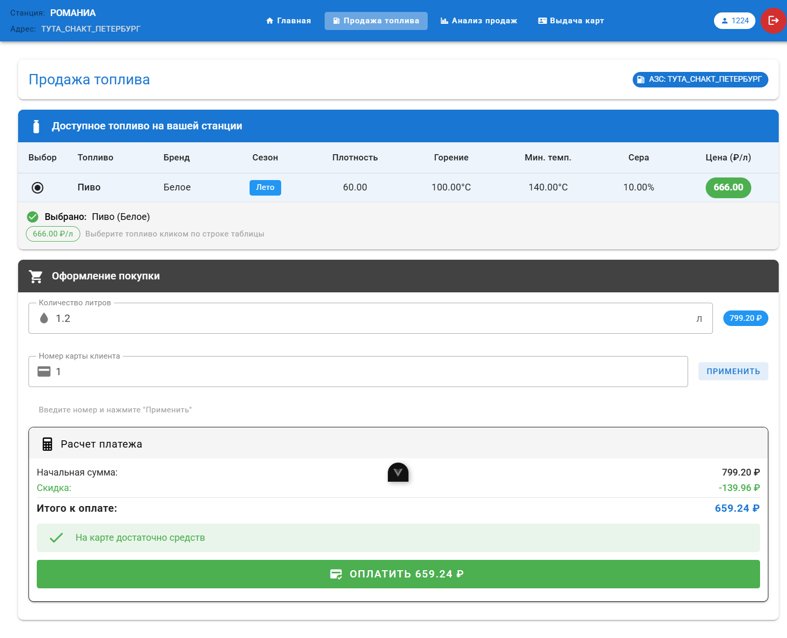
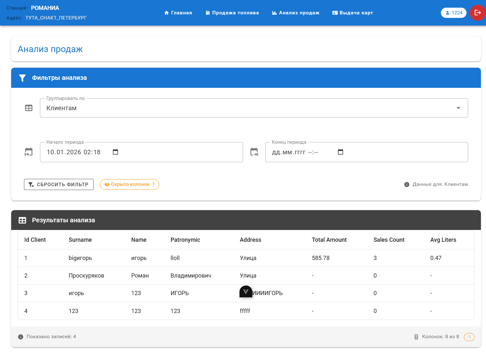
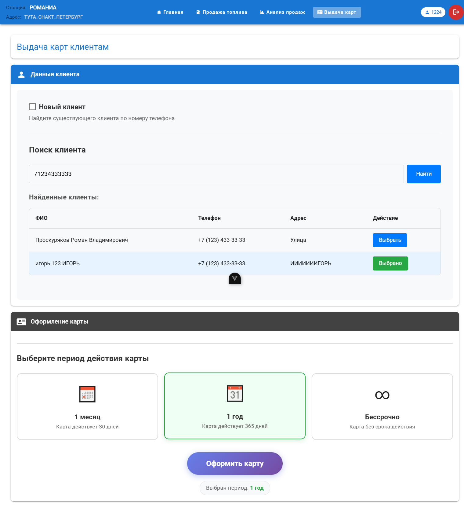
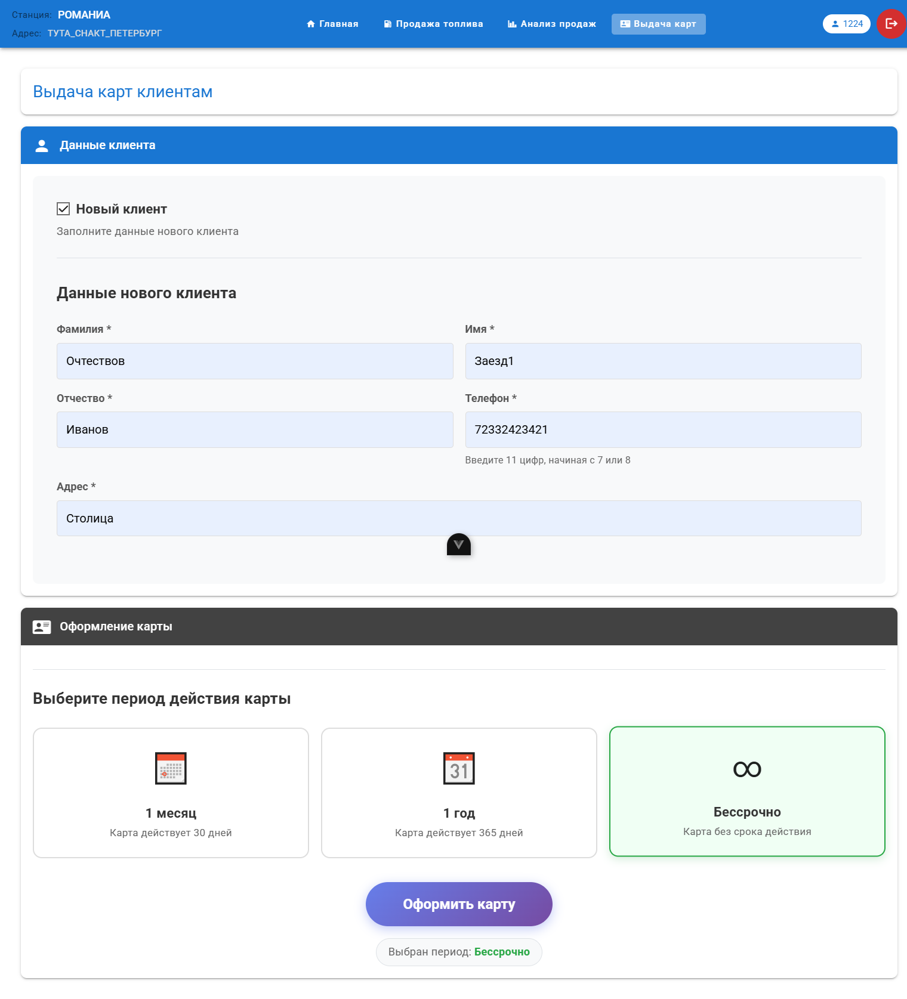

Лабораторная работа 4.
Выполнил: Проскуряков Роман Владимирович K3339.
Документация по интерфейсам системы управления АЗС
Авторизация в системе
Назначение
Страница входа в систему для сотрудников автозаправочных станций. Предоставляет доступ к функционалу системы после успешной аутентификации.
Порядок действий пользователя
-
Ввод учетных данных:
- В поле "Логин" вводится username, выданный администратором
- В поле "Пароль" вводится пароль, выданный администратором
-
Аутентификация:
- Нажать кнопку "Войти"
- При успешной авторизации происходит автоматический переход на главную страницу
- При ошибке отображается сообщение с причиной отказа
Визуальные элементы
- Поля ввода логина и пароля
- Кнопка "Войти"
- Сообщения об ошибках валидации
Форма входа в систему

Дашборд сотрудника
Назначение
Главная страница системы, отображающая информацию о текущем пользователе и предоставляющая доступ ко всем основным функциям.
Порядок действий пользователя
-
Просмотр информации:
- В верхней панели отображается название компании, адрес станции и имя пользователя
- В основном блоке показывается приветственное сообщение и краткая информация о станции
-
Навигация по системе:
- Использование навигационного меню для перехода к нужному разделу:
- "Продажа топлива" - оформление продаж топлива клиентам
- "Анализ продаж" - просмотр статистики и аналитических отчетов
- "Выдача карт" - регистрация клиентов и выдача карт лояльности
- Использование навигационного меню для перехода к нужному разделу:
-
Выход из системы:
- Нажатие кнопки "Выйти" в правом верхнем углу для завершения сессии
Визуальные элементы
- Панель навигации с информацией о пользователе
- Блок приветствия
- Быстрые ссылки на основные разделы
- Кнопка выхода из системы
Главная страница системы

Продажа топлива
Назначение
Оформление продажи автомобильного топлива клиентам с применением скидок по картам лояльности.
Порядок действий пользователя
-
Выбор топлива:
- В таблице отображаются все доступные виды топлива на текущей станции и их характеристики
- Выбрать нужное топливо кликом по строке таблицы
-
Указание количества:
- В поле "Количество литров" ввести требуемый объем (дробное число)
-
Применение карты лояльности:
- В поле "Номер карты клиента" ввести ID карты
- Нажать кнопку "Применить" для расчета скидки
-
Просмотр расчета:
- Система автоматически рассчитывает:
- Начальную сумму (цена × литры)
- Размер скидки (процент + фиксированная сумма)
- Итоговую сумму к оплате
- Если баланс карты недостаточен, отображается предупреждение
- Система автоматически рассчитывает:
-
Подтверждение оплаты:
- При достаточном балансе активируется кнопка "Оплатить"
- Нажатие открывает модальное окно подтверждения
- После подтверждения выполняется списание средств и создается запись о продаже
- Отображается сообщение об успешной операции
Визуальные элементы
- Таблица доступного топлива
- Поля ввода количества литров и номера карты
- Блок расчета с отображением суммы и скидки
- Кнопка "Оплатить"
- Модальное окно подтверждения операции
Страница оформления продажи топлива

Анализ продаж
Назначение
Аналитическая страница для просмотра статистики продаж с возможностью группировки данных по различным критериям.
Порядок действий пользователя
-
Выбор критерия группировки:
- В выпадающем списке "Группировать по" выбрать один из вариантов:
- АЗС
- Виды топлива
- Карты клиентов
- Клиенты
- Компании
- Продаваемому топливу
- Производимому топливу
- Заправки
- В выпадающем списке "Группировать по" выбрать один из вариантов:
-
Настройка временного периода:
- Указать начальную и/или конечную дату анализа
- Можно указать только начало (анализ с даты до текущего момента)
- Можно указать только конец (анализ с начала истории до даты)
- Можно указать оба значения (анализ за конкретный период)
-
Просмотр таблицы результатов:
- После выбора критерия автоматически загружается таблица с данными
- Каждая строка представляет одну группу с агрегированными показателями
- Отображаются основные для выбранного варианты группировки колонки и 3 дополнительные колонки: суммы продаж, количество продаж, средний объем
-
Настройка отображения колонок:
- Правый клик по заголовку колонки открывает контекстное меню
- Выбор "Скрыть колонку" убирает ее из таблицы (кроме последних трех колонок с итогами)
- Скрытые колонки (как и остальные филтры) сохраняются в параметрах URL
-
Сброс фильтров:
- Нажатие кнопки "Сбросить фильтр" очищает временные интервалы и скрытые колонки
- Таблица обновляется с параметрами по умолчанию
Визуальные элементы
- Выпадающий список критериев группировки
- Поля выбора даты начала и окончания периода
- Таблица с агрегированными данными
- Контекстное меню для управления колонками
- Кнопка сброса фильтров
Аналитическая панель продаж

Выдача карт клиентам
Назначение
Регистрация новых клиентов и выдача им карт с различными периодами действия.
Порядок действий пользователя
-
Выбор типа клиента:
- По умолчанию чекбокс "Новый клиент" не активен
- Если его поставить - режим создания нового клиента
-
Режим "Новый клиент":
- Заполнить все обязательные поля:
- Фамилия, Имя, Отчество
- Номер телефона
- Адрес проживания
- Заполнить все обязательные поля:
-
Режим "Существующий клиент":
- Ввести номер телефона в поле поиска
- Нажать "Найти" или дождаться автоматического поиска
- В таблице выбрать нужного клиента из найденных
-
Выбор периода действия карты:
- Выбрать один из трех вариантов кликом по карточке:
- "1 месяц" (30 дней)
- "1 год" (365 дней)
- "Бессрочно" (без срока действия)
- Выбрать один из трех вариантов кликом по карточке:
-
Оформление карты:
- После заполнения всех данных активируется кнопка "Оформить карту"
- Нажатие открывает модальное окно с подтверждением данных
- После подтверждения создается клиент (если новый) и карта
-
Получение результата:
- Отображается сообщение об успешной выдаче карты
- Показывается номер карты крупным шрифтом
- Выводится вся информация о карте и клиенте
- Предлагается выдать еще одну карту или распечатать информацию
Визуальные элементы
- Переключатель нового/существующего клиента
- Форма ввода данных клиента
- Поле поиска и таблица найденных клиентов
- Карточки выбора периода действия
- Кнопка оформления карты
- Модальное окно подтверждения
- Блок с результатом выдачи карты
Страница выдачи карт лояльности для старых клиентов

Страница выдачи карт лояльности для новых клиентов

Ключевые особенности интерфейсов
Единый дизайн и навигация
- Все страницы используют общую навигационную панель
- Единая цветовая схема и стилистика
- Адаптивный дизайн для работы на различных устройствах
Интерактивные элементы
- Контекстные меню для расширенных действий
- Модальные окна для подтверждения важных операций
- Динамическая загрузка данных без перезагрузки страниц
- Автоматические расчеты и валидация ввода
Безопасность и удобство
- Сохранение состояния фильтров в URL
- Поддержка навигации по истории браузера
- Автоматический выход при истечении сессии
- Подробные сообщения об ошибках и успешных операциях
Заключение
Разработанная система предоставляет полный набор инструментов для управления продажами на автозаправочных станциях. Интерфейсы интуитивно понятны, функциональны и ориентированы на повышение эффективности работы сотрудников.